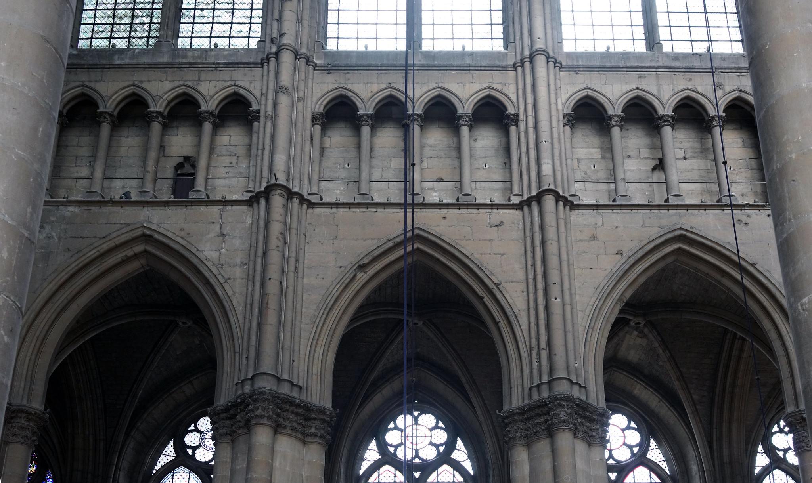
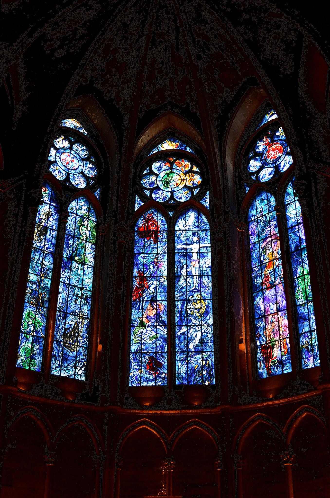
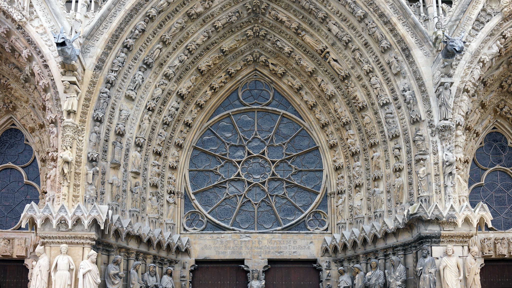

La cathédrale Notre-Dame de Reims
Voici la cathédrale Notre-Dame de Reims, une des réalisations majeures de l'art gothique en France, inscrite sur la liste du patrimoine mondial de l'UNESCO depuis 1991.
Cette cathédrale fut le lieu du baptême de Clovis et a été, à partir du XIe siècle, celui de la quasi-totalité des sacres des rois de France, ce qui en fait un lieu de mémoire et d’identité nationale. L'édifice gothique actuel a été érigé à partir de 1211 par l'archevêque Aubry de Humbert (1207-1218) à la suite de la destruction du bâtiment précédent dans un incendie survenu un an auparavant, le 6 mai 1210. Ainsi lorsque Louis IX se fait couronner en 1226, la cathédrale telle qu'on la connaît aujourd'hui est encore en construction. Cette cathédrale du XIIIe siècle présente aujourd’hui des traits qui la rendent unique, notamment par son unité de style, sa luminosité et sa statuaire.

Inspiré de la cathédrale de Chartres, le monument se compose d’une nef à bas-côtés simples ouverte sur un transept (nef transversale qui coupe en angle droit la nef principale).

Ce dernier fait la transition vers un chevet à chapelles rayonnantes dont la chapelle axiale est plus profonde que les voisines. L’élévation à trois niveaux (grandes arcades, triforium et fenêtres hautes) prend également modèle sur les cathédrales de Chartres et de Soissons.
Cathédrale de Reims : Triforium. Crédit: Steven Zucker
Enfin,les vitraux de la cathédrale laissant passer un halo lumineux. Cette quête de lumière est l’un des traits majeurs de la cathédrale comme l’indiquent les tympans des portails occidentaux, l’élision du mur de fond du triforium et des écoinçons de la rose de la même façade.
Vitraux de Marc Chagall vu de l'intérieur de la Cathédrale. Crédit: CpakMoi
Tympan et rosace centrale. Crédit: Steven Zucker
Pour découvrir, tout l’histoire de cette cathédrale, il est possible de faire une visite du monument. Le tarif est de 8 euros mais il y a des conditions de gratuité notamment pour les personnes mineures et autres. Pour plus d’informations concernant la visite n’hésitez pas à consulter le site web de la cathédrale: Informations pratique: Cathédrale de Reims